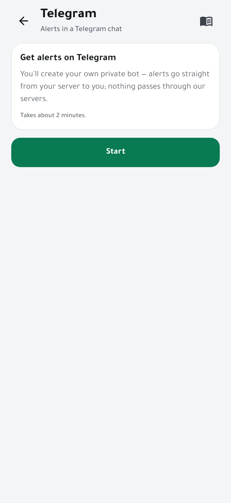
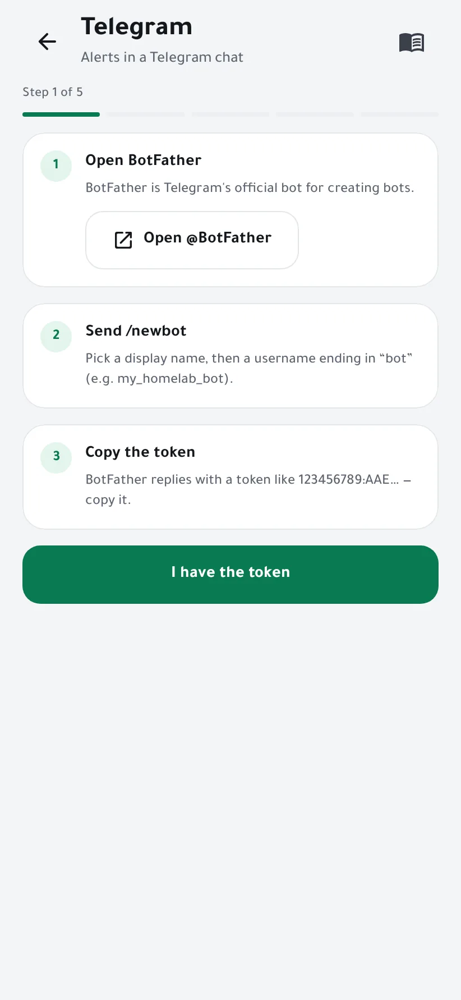
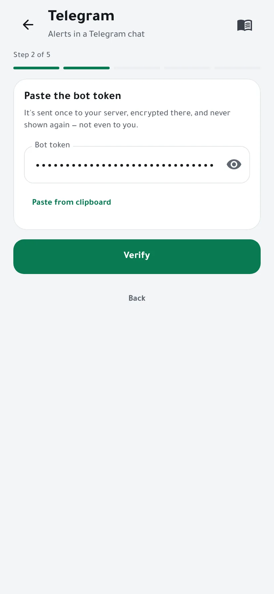
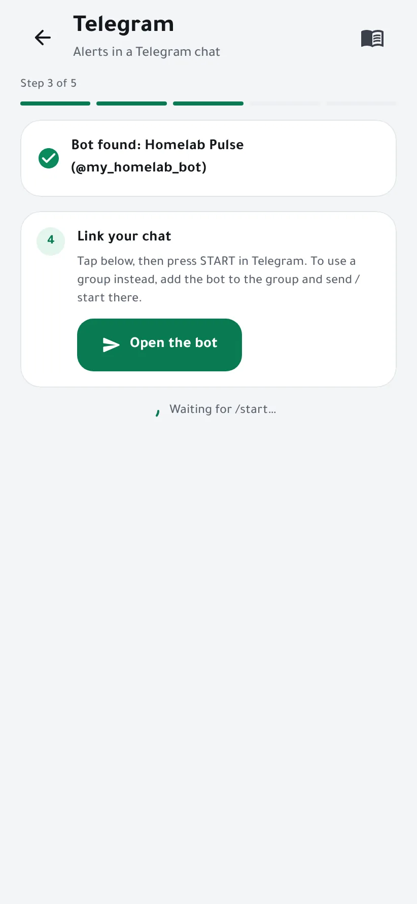
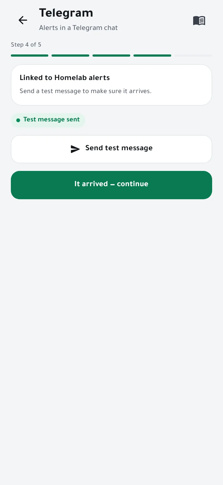
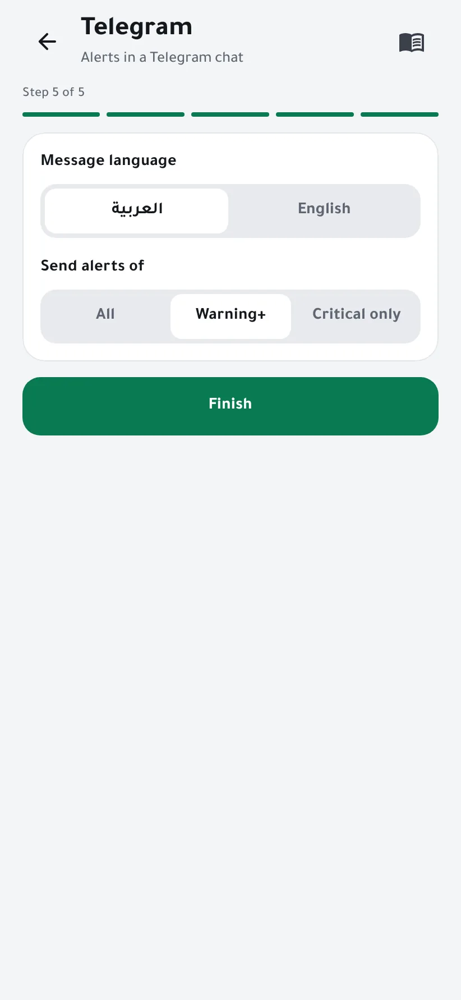
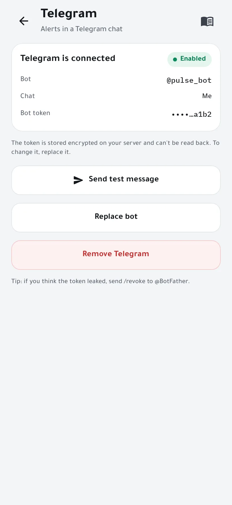

Get alerts on Telegram
Your server sends its alerts to a Telegram chat through a bot that you create and own. Alerts go straight from your server to Telegram, never through us. It takes about two minutes.
You need
- Telegram on your phone.
- An admin phone in Homelab Pulse.
- Internet access from your server to Telegram (
api.telegram.org).
-
Open the wizard
Open Settings → Telegram and tap Start.

-
Create your bot with BotFather
Tap Open @BotFather, Telegram's official bot for creating bots, and send
/newbot. Pick a display name, then a username ending in “bot”, for examplemy_homelab_bot.BotFather replies with a token like
123456789:AAE…. Copy it, then tap I have the token.
-
Paste the token
Paste from clipboard fills the field and clears the clipboard. Tap Verify.
The token is sent once to your server, stored there encrypted, and never shown again, not even to you.

-
Link your chat
Tap Open the bot, then START in Telegram. The wizard notices within seconds.
For a group instead, add the bot to the group and send
/startthere.
-
Send a test
Tap Send test message. When it arrives in Telegram, tap It arrived — continue.

-
Choose the language and which alerts
Pick the language of the messages, then whether to send all alerts, warnings and above, or critical ones only. Tap Finish.

-
Done
Telegram is connected. From the same page you can send another test, replace the bot or remove Telegram.

Good to know
- The bot answers only the chat you linked; messages from anyone else are ignored.
- If you think the token leaked, send
/revoketo @BotFather, then tap Replace bot in the app.
If something goes wrong
- The token is refused
- Copy the whole token, including the digits before the colon.
- Nothing happens after START
- Make sure you opened your own bot (check its username) and tapped START. In a group, send
/startafter adding the bot. - The test message doesn't arrive
- Your server needs internet access to
api.telegram.org.